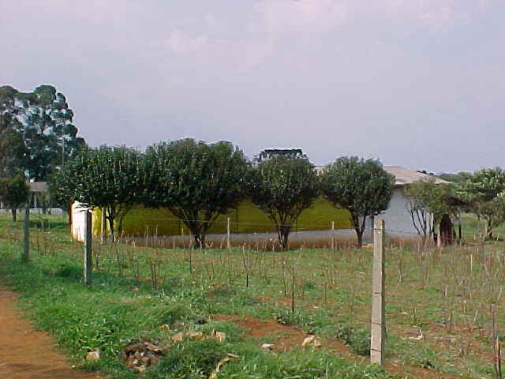
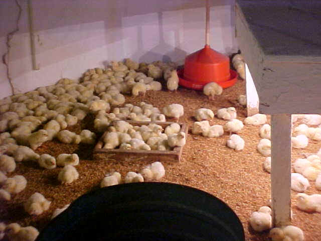
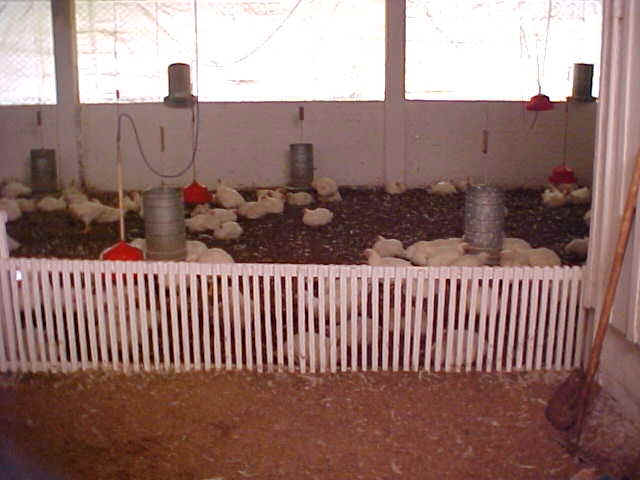

Avicultura de Corte

Setor de produção destinado a criação de frangos para aprendizagem dos alunos, que acompanham desde a recepção de pintos com 1 dia de idade até o seu abate, aprendendo assim todo o ciclo de criação. A produção é destinada ao consumo dos alunos.
O aviário tem capacidade para 1200 aves, os lotes são divididos em 600 aves em ciclo inicial e 600 em terminação.


